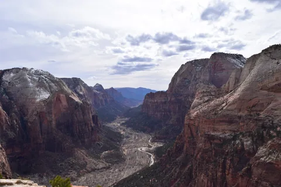
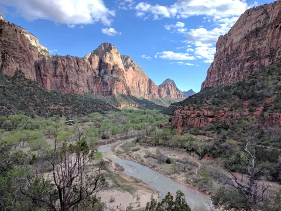

» present
Senior Software Engineer
Playlist Technologies
Redmond, Washington
Senior Software Engineer at Playlist Technologies. Previously Morgan & Morgan and a decade at Amazon. Photographer, writer, and lifelong speedcuber.
About
My work spans backend services, AI-assisted workflows, engineering leadership, and the infrastructure underneath it all. For over a decade, the instinct has stayed the same: find where a system frustrates the people using it, then fix the system. What AI changed is the economics. Frustrating systems are still everywhere; the cost of fixing them has collapsed. The job now is designing the workflows, standards, and guardrails that give a whole team that leverage, not just whoever holds the newest tool.
Before Morgan & Morgan, I spent a decade at Amazon and AWS: marketplace logistics for millions of third-party sellers, product compatibility for millions of customers, then developer advocacy for DynamoDB, writing for the AWS Databases Blog and speaking at re:Invent 2024. Before that, the University of Waterloo, where I earned an Honours Bachelor of Computer Science through the Faculty of Mathematics, with a History minor. The minor still shows in how I write and how I think about why systems end up the way they are.
Away from a keyboard: landscape photography (everything on this page is mine), snowboarding, tennis, and speedcubing. The cubing once put me on PBS NewsHour, and my WCA results are a matter of public record.
Work
I was a technical lead at Morgan & Morgan, building legal technology. I architected the firm's agentic AI platform (Claude, Python, FastAPI) and the engineering standards that supported it across a thirty-person org, led a small team directly, and owned Terraform infrastructure and Datadog observability across seven services. The rest was zero-to-one experimentation: turning manual legal work into supervised, human-in-the-loop automation for mass tort and medical malpractice cases.
I also owned document indexing services and operations for the Elastic clusters holding the firm's medical records, court dockets, and police reports. Those services supported document search through the firm's customer-facing AI tools, which used an internal facade over the underlying models.
Three tours. First, marketplace logistics: the platform vending shipping labels from carriers like UPS, FedEx, DHL, and Royal Mail to third-party sellers worldwide. Then product compatibility: the data pipelines and customer-facing widgets that tell you whether a replacement part actually fits your printer. Finally, AWS: developer advocacy for DynamoDB, five posts on the AWS Databases Blog and a code talk at re:Invent 2024. Along the way: interviewing Bar Raiser, security certifier, and organizer of a weekly talk series whose topics included dumplings and kombucha.
Riot Games (player accounts), Audible (test automation), a grocery-tech startup I co-founded out of the VeloCity incubator, and stints in ad-tech, network security, and finance IT. Six companies in six industries taught me more about picking problems than any single job could have.
Photographs


Writing
I write about engineering leadership, AI tooling, and the habits that make both work. From 2024 to 2025 I wrote for the AWS Databases Blog as the developer advocate for DynamoDB; those pieces are below.
The older personal archive lives on WordPress until it's migrated here.
Quotes
Early success is a terrible teacher. You're essentially being rewarded for a lack of preparation, so when you find yourself in a situation where you must prepare, you can't do it. You don't know how.
Chris Hadfield
Embrace failure. Never never quit. Get very comfortable with that uneasy feeling of going against the grain and trying something new. It will constantly take you places you never thought you could go.
Terry Crews
There are no limits. There are only plateaus, and you must not stay there, you must go beyond them.
Bruce Lee
There is nothing noble in being superior to your fellow man; true nobility is being superior to your former self.
After W. L. Sheldon
Go to the gym, don't even work out. Just GO. Because the habit of going to the gym is more important than the workout.
Terry Crews
Don't let life randomly kick you into the adult you don't want to become.
Chris Hadfield
Being grateful is the bridge between the world of nightmares and the world where we are free to say no.
James Altucher
I've failed over and over and over again in my life. And that is why I succeed.
Michael Jordan
Don't count the days. Make the days count.
Muhammad Ali
We suffer not from the events in our lives but from our judgment about them.
Epictetus
Twenty years from now you will be more disappointed by the things that you didn't do than by the ones you did do. So throw off the bowlines, sail away from safe harbor, catch the trade winds in your sails. Explore, Dream, Discover.
Sarah Frances Brown
If you start thinking that only your biggest and shiniest moments count, you're setting yourself up to feel like a failure most of the time.
Chris Hadfield
Without rejection there is no frontier, there is no passion, and there is no magic.
James Altucher
Leadership is about laying the groundwork for others' success, and then standing back and letting them shine.
Chris Hadfield
Contact
For anything professional, casual, or cube-related, send me a message using this form. I usually respond within a day.
{kind=link}
{kind=link}
{kind=link}
{kind=link}
{kind=link}
{kind=link}
{kind=link}
{kind=link}
{kind=link}
{kind=link}
{kind=link}